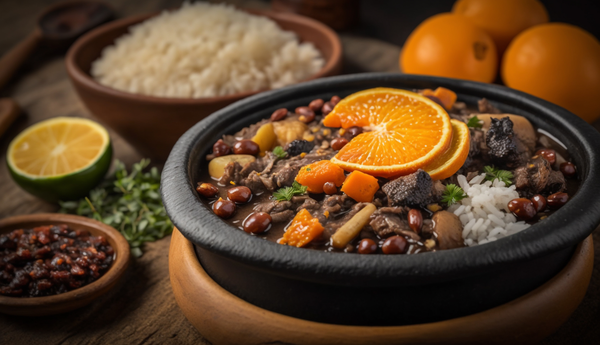

Restaurante ComaFeliz
Restaurante ComaFeliz
 Um prato típico brasileiro, uma iguária sem igual, servida aqui no restaurante ComaFeliz com linguiça e laranja.
Ao degustá-lo, o prato passa uma sensação de conforto para as papilas gustativas, misturando uma sabor ácido e salgado de maneira extravagante . São servidas 500g
| TABELA NUTRICIONAL (1 porção de 200g) |
%VD* |
| Calorias (valor energético) |
267 kcal |
12.95% |
| Carboidratos |
29.53 g |
9.75% |
| Proteínas |
18 g |
6.20% |
| Gorduras Totais |
14.40 g |
29.7% |
| Gorduras Saturadas |
4.67 g |
15.67% |
| Fibra Alimentar |
12.5 g |
40.5% |
| Sódio |
620 mg |
25% |
% Valores Diários de referência com base em uma dieta de 2.000 kcal ou 8400 kJ. Seus valores diários podem ser maiores ou menores dependendo de suas necessidades energéticas. |